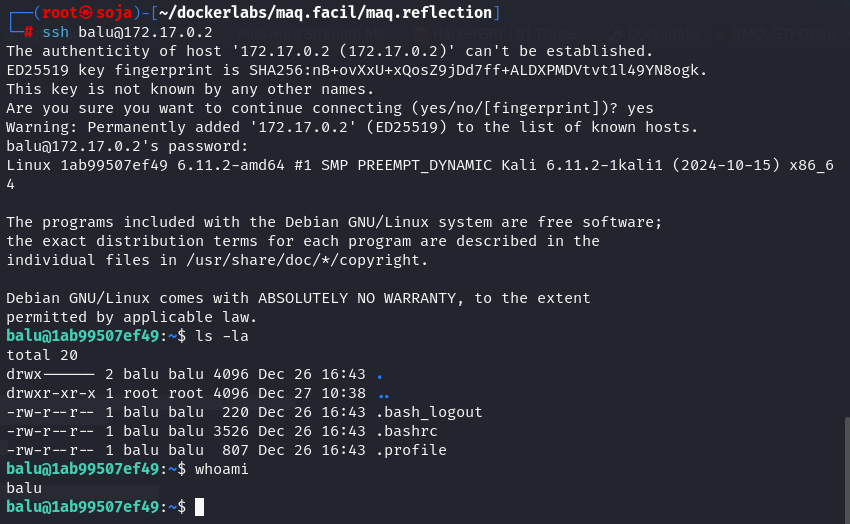

MÁQUINA REFLECTION
Para utilizar esta máquina devemos primeiro baixar os arquivos e assim implantá-la com Docker.
Baixamos o arquivo da página https://dockerlabs.es/
Para implantar o laboratório executamos da seguinte forma, para que também possamos ver que ele nos diz a direção que teremos, bem como o que fazer quando terminarmos.
COLETA DE INFORMAÇÕES
nmap 172.17.0.2 -A -sS -sC -sV -Pn -p- -T5
Temos duas portas aberta:
22/tcp open ssh OpenSSH 9.2p1 Debian
80/tcp open http Apache httpd 2.4.62 ((Debian))
Vamos fazer um fuzzing para ver se tem pastas ocultas, com a ferramenta gobuster.
gobuster dir -u http://172.17.0.2 -w /usr/share/seclists/Discovery/Web-Content/big.txt -x .txt,.html,.php,.py
Vamos explorar a porta 80: http://172.17.0.2/
Vamos o código fonte, e temos um usuário e senha: view-source:http://172.17.0.2/
Usuario: balu
Password: balulero
Veja que conseguimos fazer o login no ssh com o usuário balu.
ssh balu@172.17.0.2

Vamos procurar por privilégios:
sudo -l
não temos permissão para executar o comando.
Vamos usar o comando de suid.
find / -perm -4000 2>/dev/null
Temos o arquivo env, então vamos para o site: https://gtfobins.github.io/gtfobins/env/#sudo
Com o comando abaixo conseguimos o privilégio de root.
/usr/bin/env /bin/bash -p
somos root
R10
★★★★★★★★★★★★★★★★★★★★★★★★★★★★★★★★★★★★★★★★★★★★★★★★★★★★★★★★★★★★★
UMA OUTRA OPÇÃO DE SER ROOT
Na pasta raíz do sistema temos um arquivo secret.bak, e nele temos um usuário e senha.
usuário: balulito
senha: balulerochingon
Vamos prosseguir e entrar nesse usuário e procurar por privilégios de root.
Veja que conseguimos entrar no usuário balulito, procurar por privilégios com suid, com o comando a abaixo, e logo em seguida conseguimos acessar o usuário root novamente com env. site:https://gtfobins.github.io/gtfobins/env/#sudo
find / -perm -4000 2>/dev/null
★★★★★★★★★★★★★★★★★★★★★★★★★★★★★★★★★★★★★★★★★★★★★★★★★★★★★★★★★★★★★
TERCEIRA OPÇÃO PARA SER ROOT.
Com o comando sudo -l:
Você tem permissão para rodar o comando /bin/cp como root sem precisar fornecer senha. Isso pode ser usado para copiar arquivos ou substituir arquivos do sistema, ou que pode ser útil para escalar privilégios.
Aqui está uma abordagem que você pode tentar escalar privilégios ou modificar arquivos críticos como /etc/passwd ou /etc/shadow :
Passo 1
: Copiar arquivos críticos
Primeiro, copie os arquivos que você deseja editar para um local acessível, como o diretório /tmp .
Vamos copiar o arquivo /etc/passwd para a pasta /tmp.
Passo 2:
Agora vamos copiar o arquivo e editar com nano.
Passo 3
: Substituir os arquivos originais
Depois de editar os arquivos, substitua os arquivos originais com o comando cp (já que você pode usar esse comando como root sem precisar de senha).
sudo cp /tmp/passwd /etc/passwd
Passo 4
: Testar o acesso
Agora, você pode tentar fazer login como root ou outro usuário que você tenha configurado.
Agora com o comando su, vamos ser root.
Somos root
R10